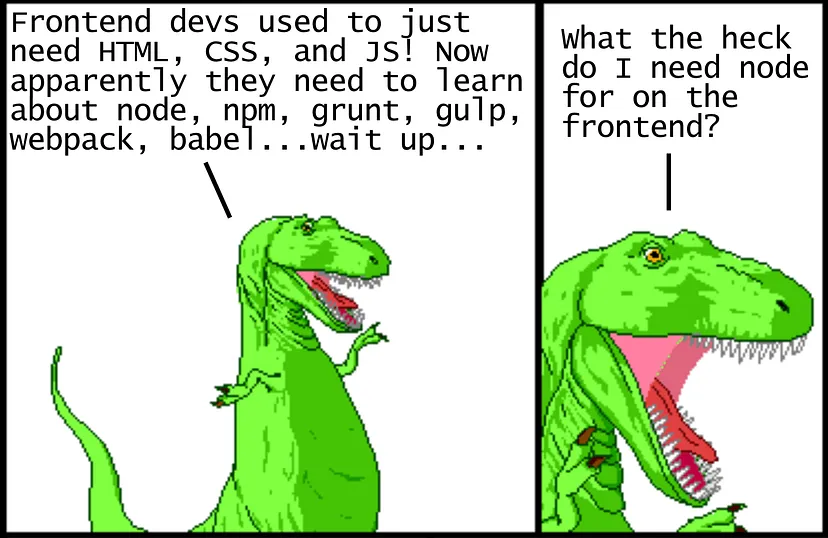
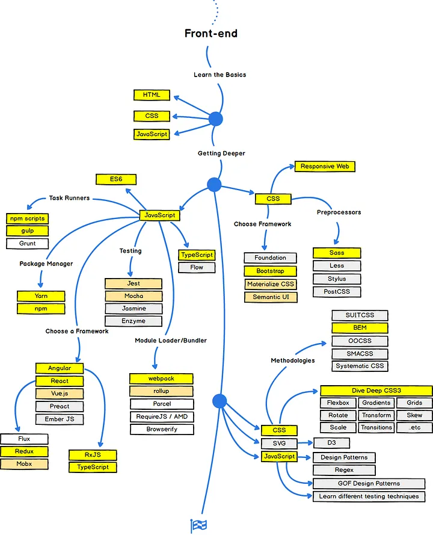
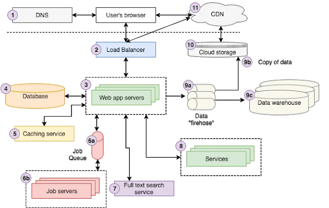
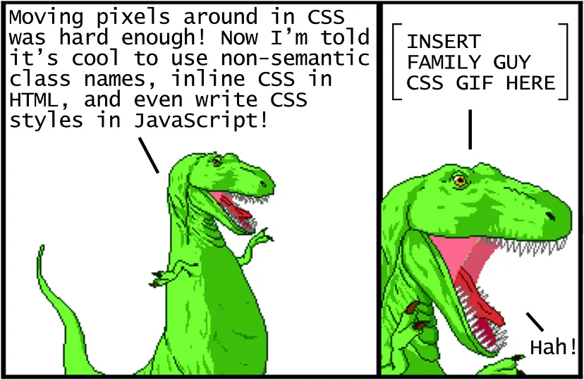
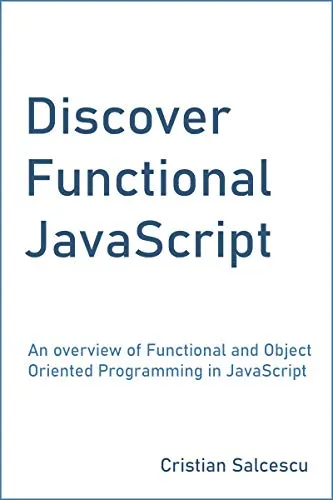
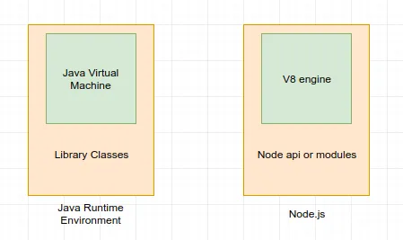
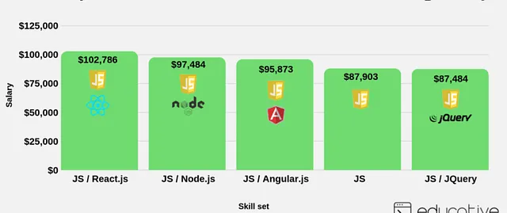

8 best Articles Every Web Developer Should Read
Anyway, without wasting any more of your time, here is my list of 8 articles every web developer should read:
- Modern JavaScript Explained For Dinosaurs
- The Web Developer RoadMap
- Web Architecture 101
- Modern CSS Explained For Dinosaur
- Learn these JavaScript fundamentals and become a better developer
- What exactly is Node.js
- Top 10 JavaScript Frameworks to Learn in Depth
- How I landed a full stack developer job without a tech degree or work experience
- 1: Modern JavaScript Explained For Dinosaurs:
- This is probably the best explanation I’ve ever seen about modern frontend development workflow, and if you
are new to JavaScript or web development, you must read this article.
You will learn so much about JavaScript by just reading this one article. If you have looked at JavaScript
10 years ago and want to get up-to-speed quickly, definitely read this article
And, if you want to learn more about JavaScript The
Complete JavaScript Course

- 2: The Web Developer RoadMap:
- This is not just an article of the sort but a fantastic resource on what it takes to become a Web developer.
It lists all the technologies and tools a Web developer should be familiar with.
I really liked those mind-maps which appear now in many other places on the web. It effectively complements
The
Web Developer Bootcamp course, which teaches you most of the technologies mentioned in this roadmap.

- 3. Web Architecture 101:
- The basic architecture concepts which I believe every web developer should learn and understand. If you have
just started with web development, you may find it complicated, but it’s worth reading. I won’t say much, as
the below diagram says it all.
I always try to understand the flow before doing any change or while debugging issues. Once you know
workflow like where is the input coming from, where is the logic and data, and how the response is returned
makes a lot of difference in your day-to-day work.
And, If you’re looking for a complete course on web application and software architecture, I recommend
checking out Web
Application and Software Architecture 101. This is a useful course for anyone looking to strengthen
their overall knowledge of software architecture.

- 4. Modern CSS Explained For Dinosaur:
- This is another masterpiece from Peter Jang, author of the very first article in this list, but this time,
he has covered CSS, another pillar of web development.
To be honest, like JavaScript, CSS has also changed a lot, and if you haven’t used CSS for a long time, this
article will bring you up to speed.
And, if you want to learn more, in a much-structured way, this Advanced
CSS and Sass: Flexbox, Grid, and more by Jonas Schedtmann is another great resource to follow-up.
The best thing is that both of these articles are free articles on Medium.

- 5. Learn these JavaScript fundamentals and become a better developer:
- The power of JavaScript lies in its simplicity, and Knowing the JavaScript fundamentals makes us better at
understanding and using the language. This article will teach you some JavaScript fundamentals which many
web developers overlook.
If you want to learn more, you can also read the author’s Discover
Functional JavaScript book, which was named one of the best new Functional Programming books by
BookAuthority!

- 6. What exactly is Node.js:
- Node.js is a JavaScript runtime environment. Sounds great, but what does that mean? How does that work? All
of these questions have been answered in this article.
Since Node.js is a must for any serious web developer in today’s world,, particularly for full-stack
developers, a good understanding of Node.js goes a long way.
This is the best article to learn and understand Node.js, but if you want to learn more, The
Complete Node.js Developer Course by Andrew J. Mead on Udemy is another awesome resource.

- 7. Top 10 JavaScript Frameworks to Learn in Depth:
- This is another fantastic article with a list of fantastic JavaScript frameworks for both frontend and
backend development like Angular, Reactjs, Nodejs, etc. It will teach you the key technologies and
frameworks needed to become a modern front-end and back-end developer.
This article also contains resources like The
Complete Web Development Bootcamp course by Angela Yu where you can learn those Javascript
frameworks. I strongly recommend reading them, especially if you want to become a full-stack Web Developer.

- 8. How I landed a full stack developer job without a tech degree or work experience:
- There is no better way to learn but from other people’s experience, and this article presents an opportunity
to learn how the author manages to find a full-stack web developer job without relevant work experience, no
tech degree, and not even a year of active coding
experience.
MADE BY FAIZY